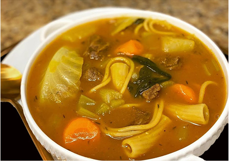

Pumpkin Soup (Soup Joumou)
Welcome to the Haitian tradition of having a bowl of pumpkin soup on New Years day. Enjoy starting you own tradition by following this mouth watering recipe.
Ingredients
Seasoning for the meat
- 1 Salt
- Black pepper
- Lime (the quantity depends on the amout of meat)
- 6 cloves of garlic
- Parsley
Seasoning for the soup
- ½ lemon juice
- ½ green cabbage sliced very thin
- 3 celery coarsely chopped
- 3 tunips sliced
- 1 large onion coarsely chopped
- 4 small green onion coarsely chopped
- 4 to 5 carrosts sliced
- 2 tbl spoon of butter
- 2 hands full of macaroni
- ¼ box of spaghetti
- 1 pumpkin
The meat
- 2 beef shin
- 2 beef brisket
Steps
- Thoroughly wash meat with lime in warm water. Put to boil with salt, black pepper, garlic and parsley and thym tided togeter. Do not make too tender.
- Boil pumpkin to a puree enough to blend, then drain in stainer and in pot of half tenderized meat. If too thick, add some broth to your liking.
- After 5 to 10 minutes of boiling, add sliced carrots, diced potatoes, thinly sliced cabbage, sliced turnips, chopped onions, chopped green onions, chopped celery, 2 tbl spoon of butter, some chopped garlic, ½ lemon juice. Leave to boil.
- 10 minutes into boiling, add macaroni and spaghetti(broken in half). Add scotch bonnet pepper punctured with a tooth pick to your liking.Reduce heat to medium low, cover and let simmer for 15 to 20 minutes more.